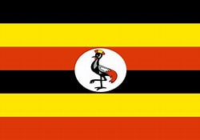

Bulyaba Tracy
About Me
My name is Tracy, and I’m from Kampala, Uganda. I’m currently studying web development and learning how to build websites. I enjoy coding and learning new technologies. My goal is to become a skilled web developer in the future.
Kampala, Uganda

Kampala is the capital of Uganda, located near Lake Victoria and serving as the nation’s main hub. It has deep roots in the Buganda Kingdom and features landmarks like the Kasubi Tombs. Kampala is a vibrant, fast-growing city known for its culture and local food like Rolex.